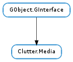

| Subclasses: | ClutterGst.VideoTexture |
|---|
| get_audio_volume() | |
| get_buffer_fill() | |
| get_can_seek() | |
| get_duration() | |
| get_playing() | |
| get_progress() | |
| get_subtitle_font_name() | |
| get_subtitle_uri() | |
| get_uri() | |
| set_audio_volume(volume) | |
| set_filename(filename) | |
| set_playing(playing) | |
| set_progress(progress) | |
| set_subtitle_font_name(font_name) | |
| set_subtitle_uri(uri) | |
| set_uri(uri) |
| Name | Type | Flags | Description |
|---|---|---|---|
| audio-volume | float | r/w | The volume of the audio |
| buffer-fill | float | r | The fill level of the buffer |
| can-seek | bool | r | Whether the current stream is seekable |
| duration | float | r | The duration of the stream, in seconds |
| playing | bool | r/w | Whether the actor is playing |
| progress | float | r/w | Current progress of the playback |
| subtitle-font-name | str | r/w | The font used to display subtitles |
| subtitle-uri | str | r/w | URI of a subtitle file |
| uri | str | r/w | URI of a media file |
| Name | Parameters | Return | Description |
|---|---|---|---|
| eos | The ::eos signal is emitted each time the media stream ends. | ||
| error | GLib.Error | The ::error signal is emitted each time an error occurred. |
Bases: GObject.GInterface
Clutter.Media is an opaque structure whose members cannot be directly accessed
| Returns: | The playback volume between 0.0 and 1.0 |
|---|---|
| Return type: | float |
Retrieves the playback volume of media.
| Returns: | the fill level, between 0.0 and 1.0 |
|---|---|
| Return type: | float |
Retrieves the amount of the stream that is buffered.
| Returns: | True if media can seek, False otherwise. |
|---|---|
| Return type: | bool |
Retrieves whether media is seekable or not.
| Returns: | the duration of the media stream, in seconds |
|---|---|
| Return type: | float |
Retrieves the duration of the media stream that media represents.
| Returns: | True if playing, False if stopped. |
|---|---|
| Return type: | bool |
Retrieves the playing status of media.
| Returns: | the playback progress, between 0.0 and 1.0 |
|---|---|
| Return type: | float |
Retrieves the playback progress of media.
| Returns: | a string containing the font name. Use GLib.free () to free the returned string |
|---|---|
| Return type: | str |
Retrieves the font name currently used.
| Returns: | the URI of the subtitle file. Use GLib.free () to free the returned string |
|---|---|
| Return type: | str |
Retrieves the URI of the subtitle file in use.
| Returns: | the URI of the media stream. Use GLib.free () to free the returned string |
|---|---|
| Return type: | str |
Retrieves the URI from media.
| Parameters: | volume (float) – the volume as a double between 0.0 and 1.0 |
|---|
Sets the playback volume of media to volume.
| Parameters: | filename (str) – A filename |
|---|
Sets the source of media using a file path.
| Parameters: | playing (bool) – True to start playing |
|---|
Starts or stops playing of media.
The implementation might be asynchronous, so the way to know whether the actual playing state of the media is to use the GObject.Object ::notify signal on the Clutter.Media :playing property and then retrieve the current state with Clutter.Media.get_playing (). ClutterGstVideoTexture in clutter-gst is an example of such an asynchronous implementation.
| Parameters: | progress (float) – the progress of the playback, between 0.0 and 1.0 |
|---|
Sets the playback progress of media. The progress is a normalized value between 0.0 (begin) and 1.0 (end).
| Parameters: | font_name (str) – a font name, or None to set the default font name |
|---|
Sets the font used by the subtitle renderer. The font_name string must be either None, which means that the default font name of the underlying implementation will be used; or must follow the grammar recognized by Pango.FontDescription.from_string () like:
clutter_media_set_subtitle_font_name (media, "Sans 24pt");